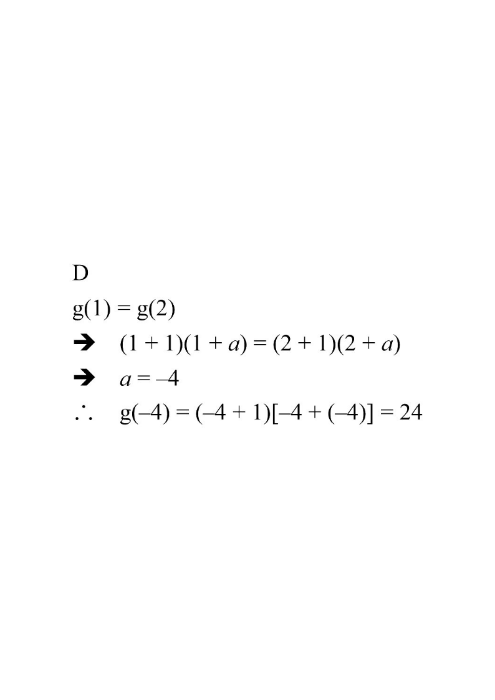

Step 1 — The given function and the condition $g(1)=g(2)$.
Scroll the solution on the right — this figure updates at each step.
Let $g(x)=(x+1)(x+a)$, where $a$ is a constant. If $g(1)=g(2)$, then $g(-4)=$

Question. Let \(g(x)=(x+2)(x+a)\), where \(a\) is a constant. If \(g(2)=g(4)\), find \(g(-3)\).